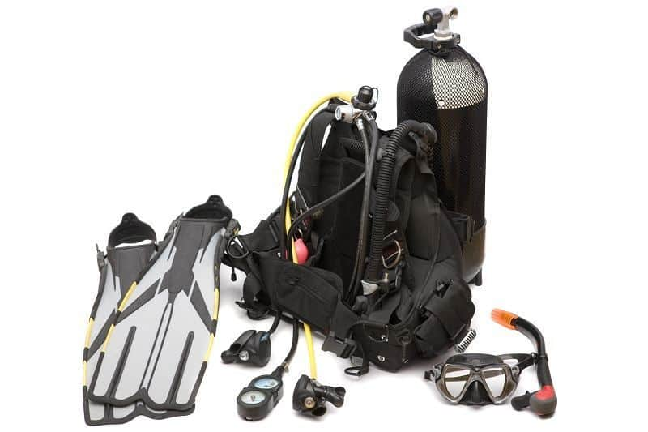
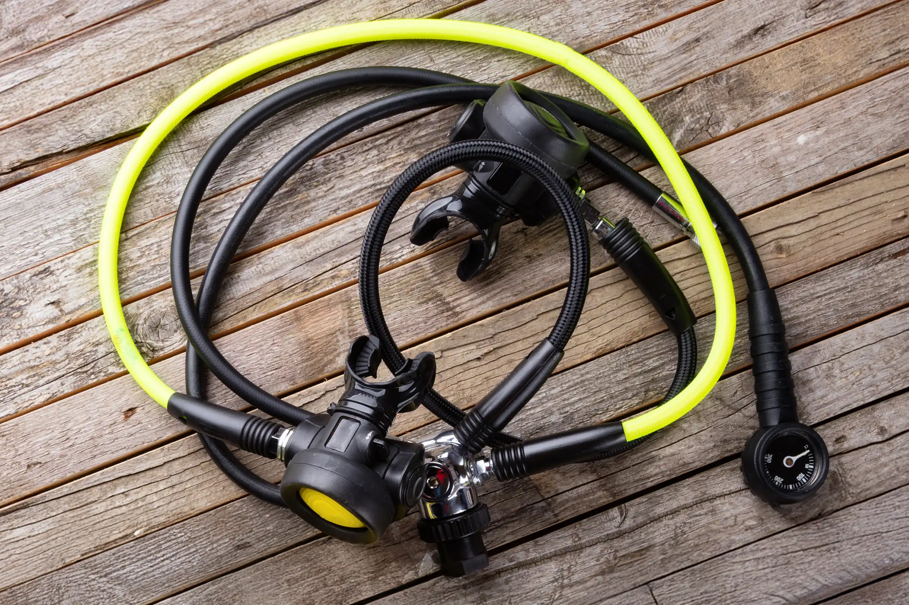
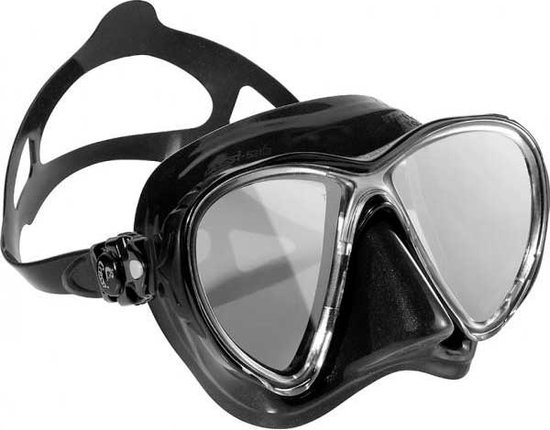
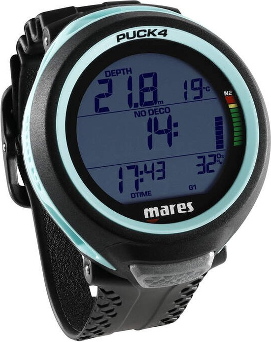

Onderdelen
| Duikuitrusting | Basisonderdelen | Geavanceerde onderdelen |
|---|---|---|
| Trimvest | duikmasker | Duikcomputer |
| Ademautomaten | Snorkel | Duiklamp |
| Duikfles | Vinnen | Flesklopper |
| Loodgordel | Duikpak | Snijgereedschap |

Benodigdheden duikuitrusting

Dit zijn onderdelen die echt nodig zijn voor een werkende duikuitrusting. Meestal leen je deze van een duikorganisatie, want zelf kopen is heel duur. Een trimvest helpt een duiker het drijfvermogen onder water te regelen. Ademautomaten verlagen de hoge druk van de duikfles naar een adembare druk, zodat je veilig onder water kunt ademen. De duikfles bevat perslucht of speciale mengsels zoals nitrox, essentieel voor onderwaterademhaling. Een loodgordel of geïntegreerd lood in het BCD helpt de duiker om neutraal te blijven drijven door het drijfvermogen van het pak en de lucht in de fles te compenseren.
Basisonderdelen

Dit zijn onderdelen die je vaak zelf meeneemt, en niet per se leent van een duikorganisatie. Een duikmasker zorgt ervoor dat je onder water goed kunt zien. Een snorkel maakt het mogelijk om aan de oppervlakte te ademen zonder je hoofd uit het water te tillen. Vinnen helpen de duiker zich efficiënt voort te bewegen met minder inspanning. Een duikpak biedt bescherming tegen kou en schuren, en helpt de lichaamstemperatuur te behouden tijdens het duiken. je hebt een nat- en droogpak.
Geavanceerde onderdelen

dit zijn spullen die je alleen in bepaalde duikomstandigheden nodig hebt. Een duikcomputer houdt diepte, tijd en veiligheidsinformatie bij tijdens het duiken. Een duiklamp geeft licht bij nacht-, wrak- of grotduiken. Een flesklopper wordt tegen de fles getikt om aandacht van andere duikers te trekken, voor als je bijvoorbeeld in de problemen zit en hulp nodig hebt. Snijgereedschap, zoals een duikmes, wordt gebruikt om vastzittende lijnen of netten door te snijden voor veiligheid onder water.